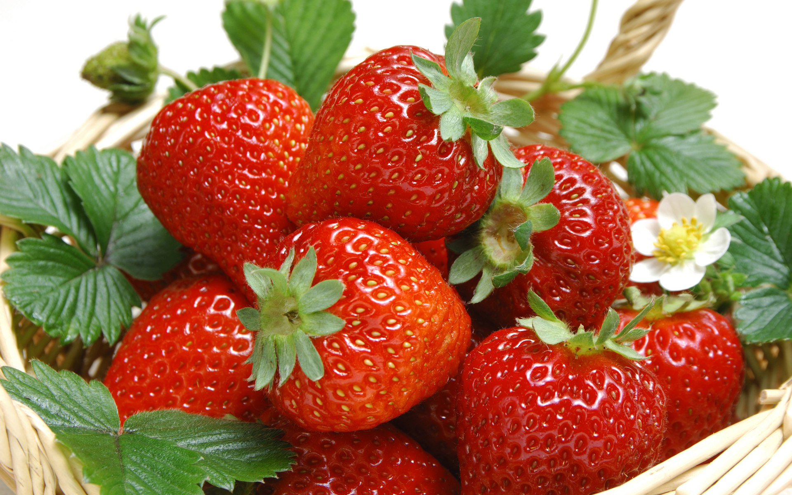

Dâu tây (danh pháp khoa học: Fragaria) hay còn gọi là dâu đất là một chi thực vật hạt kín và loài thực vật có hoa thuộc họ Hoa hồng (Rosaceae) cho quả được nhiều người ưa chuộng. Dâu tây xuất xứ từ châu Mỹ và được các nhà làm vườn châu Âu cho lai tạo vào thế kỷ 18 để tạo nên giống dâu tây được trồng rộng rãi hiện nay. Loài này được (Weston) Duchesne miêu tả khoa học đầu tiên năm 1788.
Dâu tây được trồng lấy trái ở vùng ôn đới. Với mùi thơm hấp dẫn cùng vị dâu ngọt lẫn chua nên dâu tây được ưa chuộng.
Ở Việt Nam, khí hậu mát mẻ của miền núi Đà Lạt là môi trường thích hợp với việc canh tác dâu nên loại trái cây này được xem là đặc sản của vùng cao nguyên nơi đây.
Giới thiệuDâu tây là một thứ quả mà ai cũng muốn được 1 lần muốn thử khi lên đặt chân lên đến Đà Lạt
Là loại dâu tây hảo hạng ngon và nổi tiếng nhất đất nước mặt trời mọc, khác hẳn với các giống dâu tây xứ lạnh như Đà Lạt, Sapa... Giống Dâu Tây Chịu Nhiệt Nhật Bản Tochiotome có khả năng thích nghi được với những vùng khí hậu nóng bức, nhiệt độ có thể lên tới trên 40 độ C, cây vẫn sinh trưởng tốt và cho quả quanh năm.